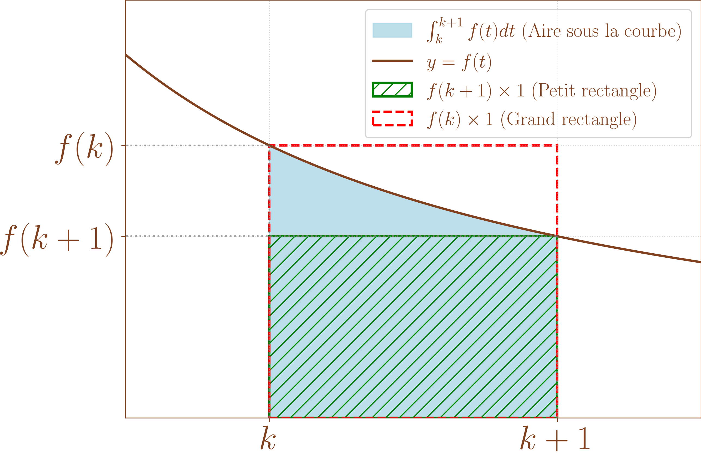

Soit \((u_n)_{n\geq 0}\) une suite de réels, on considère, pour \(n \in \mathbb{N}\), \(S_n = \sum_{k=0}^n u_k\).
La série de terme général \(u_n\), notée \(\sum u_n\), est la donnée des suites \(\left(u_n\right)\) et \(\left(S_n\right)\).
\((S_n)\) est appelée la suite des sommes partielles associées à \(\sum u_n\).
Si \((S_n)\) converge vers une limite \(S\), on dit que la série \(\sum u_n\) converge (est convergente) et sa limite est appelée la somme de la série \(\sum u_n\) et est notée \(\sum_{n=0}^{+\infty} u_n\) ou \(\sum_{n\geq 0}^{+\infty} u_n\).
Si \((S_n)\) diverge, on dit que \(\sum u_n\) diverge (est divergente).
La définition s’adapte avec \((u_n)_{n\geq n_0}\) et \(S_n = \sum_{k= n_0}^n u_k\) pour \(n \geq n_0\) dont on notera la somme \(\sum_{n=n_0}^{+\infty} u_n\) ou \(\sum_{n\geq n_0}^{+\infty} u_n\) en cas de convergence.
Soient \(\sum u_n\) et \(\sum v_n\) deux séries convergentes et \(\alpha \in \mathbb{R}\) alors la série \(\sum \left(u_n + \alpha v_n\right)\) est convergente et \(\sum_{n=0}^{+\infty}\left(u_n + \alpha v_n\right) = \sum_{n=0}^{+\infty}u_n+\alpha \sum_{n=0}^{+\infty}v_n\).
Pour tout \(n \geq 0\), \(\sum_{k=0}^n \left(u_k+\alpha v_k\right) = \sum_{k=0}^n u_k+\alpha \sum_{k=0}^n v_k.\)
Donc en cas de convergence de \(\sum u_n\) et \(\sum v_n\), en passant à la limite, on a bien convergence de \(\sum \left(u_n + \alpha v_n\right)\) et \(\sum_{n=0}^{+\infty}\left(u_n + \alpha v_n\right) = \sum_{n=0}^{+\infty}u_n+\alpha \sum_{n=0}^{+\infty}v_n\).
Soit \((u_n)\) une suite de réels, on considère la suite \((v_n)\) définie par \(v_n = u_{n+1}-u_n\) pour \(n \geq 0\).
Alors, la série \(\sum u_n\) converge si et seulement si la suite \((u_n)\) converge.
En cas de convergence, en notat \(\ell\) la limite de \((u_n)\), \(\sum_{n\geq 0}^{+\infty} = \ell-u_0\).
En notant \(\left(S_n\right)\) la suite des sommes partielles associée à \(\sum v_n\), on a pour \(n \geq 0\), \(S_n = \sum_{k=0}^n u_{k+1}-\sum_{k=0}^n u_k = \sum_{k=1}^{n+1}u_{k}-\sum_{k=0}^n u_k = u_{n+1}-u_0\).
Donc \(\left(S_n\right)\) converge si et seulement si \(\left(u_n\right)\) converge et en notant \(\ell\) la limite de \((u_n)\), on a bien \(\sum_{n\geq 0}^{+\infty} = \ell-u_0\).
Soit \(q \in \mathbb{R}\), on considère la suite \(\left(u_n\right)\) définie par \(u_n = q^n\) pour tout \(n \geq 0\). La série \(\sum u_n\) est alors appelée série géométrique et \[\sum u_n \text{ converge } \iff \left|q\right| < 1.\] De plus, en cas de convergence, la somme de la série vaut \(\frac{1}{1-q}\).
Pour \(n \geq 0\), si \(q=1\), \(\sum_{k=0}^n q^k = n+1\) qui diverge vers \(+\infty\).
Sinon, \(q \neq 1\) et comme somme géométrique, \(\sum_{k=0}^n q^k = \frac{1-q^{n+1}}{1-q}\).
Si \(\left|q\right| < 1\), \(q^{n+1} \xrightarrow[n \to +\infty]{} 0\) donc \(\sum_{k=0}^n q^k \xrightarrow[n \to +\infty]{} \frac{1}{1-q}\).
Si \(\left|q\right| > 1\), \(\left|\sum_{k=0}^n q^k\right| = \left|\frac{1-q^{n+1}}{1-q}\right| \geq \frac{\left|q\right|^{n+1}-1}{\left|1-q\right|}\) et \(\left|q\right|^{n+1} \xrightarrow[n \to +\infty]{} +\infty\).
Donc \(\left(\sum_{k=0}^n q^k\right)\) est non bornée et ne converge pas donc la série ne converge pas.
Si \(q=-1\), \(\sum_{k=0}^n q^k = \frac{1-(-1)^{n+1}}{2}\) et les termes pairs valent \(1\) tandis que les termes impairs valent \(0\) donc cette suite ne converge pas et la série non plus.
\(\sum_{k=0}^{+\infty} \frac{1}{2^k} = 2.\)
Soit \(\left(u_n\right)_{n \geq 1}\) définie par \(u_n = \frac{1}{n}\) pour \(n \geq 1\).
Alors, la série \(\sum u_n\) diverge.
Notons \(\left(S_n\right)\) la suite des sommes partielles associée à \(\sum u_n\).
Pour \(n \in \mathbb{N}^{\star}\), \(S_{2n}-S_n = \sum_{k=1}^{2n}\frac{1}{k}-\sum_{k=1}^n \frac{1}{k} = \sum_{k=n+1}^{2n} \frac{1}{k}.\)
Or, pour \(n+1 \leq k \leq 2n\), \(k \leq 2n\) donc \(\frac{1}{k} \geq 2n\).
On a donc \(S_{2n}-S_n \geq \sum_{k=n+1}^{2n} \frac{1}{2n} = \frac{2n-(n+1)+1}{2n} = \frac{1}{2}.\)
Par l’absurde, si \((S_n)\) convergeait, on aurait \(S_{2n}-S_n \xrightarrow[n \to +\infty]{} 0\), ce qui est incompatible avec \(S_{2n}-S_n \geq \frac{1}{2}\).
Donc \(\sum u_n\) diverge.
Soit \(\sum u_n\) une série convergente. Alors, \(u_n \xrightarrow[n \to +\infty]{} 0\).
Notons \(\left(S_n\right)\) la suite des sommes partielles associée à \(\sum u_n\).
On a pour tout \(n \geq 1\), \(S_{n}-S_{n-1} = \sum_{k=0}^{n}u_k - \sum_{k=0}^{n-1}u_k = u_n\).
Donc si \(\left(S_n\right)\) converge, \(\left(u_n\right)\) converge vers \(\sum_{k=0}^{+\infty}u_k-\sum_{k=0}^{+\infty}u_k = 0\).
La réciproque est fausse. La série harmonique \(\sum \frac{1}{n}\) vérifie \(\frac{1}{n} \xrightarrow[n \to +\infty]{} 0\) mais diverge.
Soit \(\sum u_n\) une série. Si \(u_n \centernot{\xrightarrow[n \to +\infty]{}} 0\), on dit que \(\sum u_n\) diverge grossièrement.
On considère, dans cette section, des séries \(\sum u_n\) telles que pour tout \(n \geq 0, u_n \geq 0\).
Soit \(\sum u_n\) une série à termes positifs et \(\left(S_n\right)\) la suite des sommes partielles associé.
Alors, \(\sum u_n \text{ converge } \iff \left(S_n\right) \text{ est majorée}.\)
De plus, dans le cas où \(\sum u_n\) diverge, \(S_n \xrightarrow[n \to +\infty]{} +\infty\).
Pour tout \(n \geq 0\), \(S_{n+1}-S_n = \sum_{k=0}^{n+1}u_k - \sum_{k=0}^n u_k = u_{n+1} \geq 0\).
Donc \(\left(S_n\right)\) est croissante et \(\left(S_n\right) \text{ converge } \iff \left(S_n\right) \text{ est majorée}.\)
On a donc \(\sum u_n \text{ converge } \iff \left(S_n\right) \text{ est majorée}.\)
De plus, dans le cas où \(\left(S_n\right)\) diverge donc n’est pas majorée, \(S_n \xrightarrow[n \to +\infty]{} +\infty\).
\(\sum \frac{1}{n^2}\) est à termes positifs.
De plus, pour tout \(k \in \mathbb{N}^{\star}, \geq 2\), \(k^2 \geq k(k-1)\) donc \(\frac{1}{k^2} \leq \frac{1}{k(k-1)} = \frac{1}{k-1}-\frac{1}{k}\).
On a donc \[\begin{aligned} \sum_{k=1}^n \frac{1}{k^2} & = 1+\sum_{k=2}^n \frac{1}{k^2} \\ & \leq 1+\sum_{k=2}^n\left(\frac{1}{k-1}-\frac{1}{k}\right) \\ & = 1+1-\frac{1}{n}\text{par télescopage} \\ & \leq 2. \end{aligned}\]
Donc \(\sum \frac{1}{n^2}\) converge.
Soit \(\sum u_n\) et \(\sum v_n\) des séries à termes positifs telles qu’il existe \(N \in \mathbb{N}\) tel que pour tout \(n \geq N\), \(u_n \leq v_n\).
Alors, si \(\sum v_n\) converge, \(\sum u_n\) converge (et de façon équivalente, si \(\sum u_n\) diverge, \(\sum v_n\) diverge).
En notant \(\left(S_n\right)\) la suite des sommes partielles associée à \(\sum u_n\) et \(\left(T_n\right)\) celle associée à \(\sum v_n\), pour tout \(n \geq N\), \[S_n = \sum_{k=0}^n u_k = \sum_{k=0}^{N-1} u_k+\sum_{k=N}^n u_k \leq \sum_{k=0}^{N-1} u_k+\sum_{k=N}^n v_k \leq \sum_{k=0}^{N-1} u_k+T_n.\]
Or, \(\sum v_n\) converge donc \(\left(T_n\right)\) est majorée.
On en déduit que \(\left(S_n\right)\) est majorée et donc \(\sum u_n\) converge.
Soit \(\alpha \in \mathbb{R}, \geq 2\) alors \(\sum \frac{1}{n^\alpha}\) converge car pour tout \(n \in \mathbb{N}^{\star}\), \(\frac{1}{n^\alpha} \leq \frac{1}{n^2}\).
Soit \((a_n)\) une suite de réels positifs et \((u_n)\) définie par \(u_n = \frac{a_n}{1+n^2a_n}\) pour tout \(n \geq 0\) alors \(\sum u_n\) converge.
En effet, \(u_n = \left\{\begin{array}{ll} 0 \leq \frac{1}{n^2} & \mbox{ si $a_n = 0$} \\ \frac{a_n}{a_n\left(\frac{1}{a_n}+n^2\right)} = \frac{1}{\frac{1}{a_n}+n^2} \leq \frac{1}{n^2}& \mbox{ si $a_n > 0$} \end{array} \right.\).
\(\sum \frac{\sin^2 n}{n^3}\) converge car cette série est à termes positifs et pour tout \(n \geq 1\), \(\frac{\sin^2 n}{n^3} \leq \frac{1}{n^3}\).
\(\sum \frac{1}{\sqrt{n}}\) diverge.
En effet, pour tout \(n \in \mathbb{N}^{\star}\), \(\frac{1}{\sqrt{n}} \geq \frac{1}{n}\) et \(\sum \frac{1}{n}\) diverge.
Soient \(\left(a_n\right), \left(b_n\right)\) deux suites de réels positifs tels que \(\sum a_n^2\) et \(\sum b_n^2\) convergent alors \(\sum a_n b_n\) converge.
En effet, pour tout \(n \geq 0\), \((a_n-b_n)^2 \geq 0 \iff a_n^2+b_n^2-2a_nb_n \iff a_nb_n \leq \frac{1}{2}(a_n^2+b_n^2)\).
Soit \(\sum u_n\) et \(\sum v_n\) des séries à termes positifs telles que \(u_n =\underset{n\to +\infty}{O} \left(v_n\right)\) alors si \(\sum v_n\) converge, \(\sum u_n\) converge.
\(u_n =\underset{n\to +\infty}{O} \left(v_n\right)\) donc il existe un rang \(N \geq 0\) et une suite \(\left(w_n\right)\) bornée telle que pour tout \(n \geq N\), \(u_n = w_n v_n\).
Il existe donc \(M \in \mathbb{R}^{+}\) tel que pour tout \(n \geq 0\), \(\left|w_n\right| \leq M\).
On a donc pour tout \(n \geq N\), \(u_n = \left|u_n\right| \leq \left|w_n\right|\left|v_n\right|\leq M v_n\) et la proposition [prop:premiere_comp_series].
Soit \(\sum u_n\) et \(\sum v_n\) des séries à termes positifs telles que \(u_n =\underset{n\to +\infty}{o} \left(v_n\right)\) alors si \(\sum v_n\) converge, \(\sum u_n\) converge.
Si \(u_n =\underset{n\to +\infty}{o} \left(v_n\right)\) alors \(u_n =\underset{n\to +\infty}{O} \left(v_n\right)\).
Soit \(\sum u_n\) une série et \(\sum v_n\) une série à termes positifs telles que \(u_n \underset{n\to +\infty}{\sim} v_n\).
Alors \(\sum u_n\) converge \(\iff\) \(\sum v_n\) converge.
Si \(\sum v_n\) converge, \(u_n \underset{n\to +\infty}{\sim} v_n\) donc il existe un rang \(N \geq 0\) et une suite \(\left(w_n\right)\) telle que \(w_n \xrightarrow[n \to +\infty]{} 1\) telle que pour tout \(n \geq N\), \(u_n = w_n v_n\).
En particulier, il existe \(N' \geq N\) tel que pour tout \(n \geq N'\), \(\left|w_n -1\right|\leq \frac{1}{2} \iff \frac{1}{2} \leq w_n \leq \frac{3}{2}\).
Donc pour \(n \geq N', u_n \geq \frac{1}{2}v_n \geq 0\) et \(u_n \leq \frac{3}{2}v_n\).
On en déduit donc que \(\sum_{n \geq N'}u_n\) converge et donc que \(\sum u_n\) converge.
On peut échanger le rôle de \((u_n)\) et \((v_n)\) pour avoir aussi \(\sum u_n\) converge \(\Longrightarrow\) \(\sum v_n\) converge.
\(\sum \frac{1}{n^2-3n+2}\) converge car \(\frac{1}{n^2-3n+2} \underset{n\to +\infty}{\sim} \frac{1}{n^2}\).
\(\sum \ln\left(1-\frac{1}{n}\right)\) diverge car \(\ln\left(1-\frac{1}{n}\right) \underset{n\to +\infty}{\sim} -\frac{1}{n}\) et \(\sum u_n\) converge \(\iff \sum(-u_n)\) converge (pour se ramener à des termes positifs).
\(\sum \left(\ln\left(1-\frac{1}{n}\right)+\frac{1}{n}\right)\) converge.
En effet, \(\ln\left(1+x\right) = x-\frac{x^2}{2}+\underset{x\to 0}{o}\left(x^2\right)\) donc \(\ln\left(1-\frac{1}{n}\right)+\frac{1}{n} = -\frac{1}{n}-\frac{1}{2n^2}+ \underset{n\to +\infty}{o}\left(\frac{1}{n^2}\right)+\frac{1}{n}=-\frac{1}{2n^2}+ \underset{n\to +\infty}{o}\left(\frac{1}{n^2}\right) \sim -\frac{1}{2n^2}\).
Soit \(f:[a,+\infty[ \to \mathbb{R}\)
continue par morceaux sur \([a,+\infty[\),
décroissante sur \([a,+\infty[\),
positive sur \([a,+\infty[\).
Soit \(N \in \mathbb{N}, \geq a\), on pose \(u_n = f(n)\) pour \(n \geq N\). Alors,
\[\sum u_n \text{ converge } \iff x \longmapsto \int_a^xf(t)dt \text{ admet une limite finie en $+\infty$.}\]
Comme \(f\) est décroissante, pour \(k \geq N\), et \(t \in [k,k+1]\), \(f(k+1) \leq f(t) \leq f(k)\).
Donc en intégrant entre \(k\) et \(k+1\), on a \[f(k+1) = \int_{k}^{k+1}f(k+1)dt \leq \int_{k}^{k+1}f(t)dt \leq \int_{k}^{k+1}f(k)dt =f(k)\]
Donc, en sommant de \(k=N\) à \(n \geq N\),
\[\begin{aligned} & \sum_{k=N}^n f(k+1) \leq\sum_{k=N}^n \int_{k}^{k+1}f(t)dt \leq \sum_{k=N}^nf(k) \\ & \iff \sum_{k=N+1}^{n+1} f(k) \leq \int_{N}^{n+1} f(t)dt \leq \sum_{k=N}^nf(k). \end{aligned}\]
Si \(\sum u_n\) converge, comme elle est à termes positifs, la suite de ses sommes partielles est majorée et donc il existe \(M \in \mathbb{R}^{+}\) tel que pour tout \(n \geq N\), \(\sum_{k=N}^nf(k) \leq M\).
De plus, comme \(f\) est positive, \(x \longmapsto \int_a^xf(t)dt\) est croissante et il suffit donc que la fonction soit majorée pour être convergente en \(+\infty\).
Soit \(x \in [a,+\infty[\), il existe \(n \in \mathbb{N}\) tel que \(n \geq N\) tel que \(n \geq x\) (par exemple, \(n = \lfloor x\rfloor +1\)) et donc \[\begin{aligned} \int_a^x f(t)dt & = \int_a^N f(t)dt + \int_N^n f(t)dt \\ & \leq \int_a^N f(t)dt + \int_N^{n+1} f(t)dt \\ & \leq \int_a^N f(t)dt +\sum_{k=N}^nf(k) \\ & \leq \int_a^N f(t)dt+M. \end{aligned}\]
Donc \(x \longmapsto \int_a^xf(t)dt\) est majorée et converge en \(+\infty\).
Si \(x \longmapsto \int_a^xf(t)dt\) admet une limite finie en \(+\infty\), alors elle est majorée.
Donc il existe \(A \in \mathbb{R}^{+}\) tel que pour tout \(x \in [a,+\infty[\), \(\int_a^xf(t)dt \leq A\).
On a donc pour tout \(n \geq N\), \(\sum_{k=N+1}^{n+1} f(k) \leq \int_{N}^{n+1} f(t)dt \leq \int_a^{n+1}f(t)dt \leq A\).
Cela donne que la suite de sommes partielles associée à \(\sum f(n)\) est majorée et comme c’est une série à termes positifs, elle est donc convergente.
L’inégalité \(f(k+1)\leq \int_{k}^{k+1}f(t)dt \leq f(k)\) peut se comprendre comme une inégalité d’aire comme illustré ci-contre.

Les séries de Riemann sont les séries \(\sum \frac{1}{n^\alpha}\) avec \(\alpha \in \mathbb{R}\). Montrons qu’elle converge si et seulement si \(\alpha > 1\).
Si \(\alpha < 0\), \(\frac{1}{n^\alpha} \xrightarrow[n \to +\infty]{} +\infty\) donc \(\sum \frac{1}{n^\alpha}\) diverge grossièrement.
Si \(\alpha \geq 0\), \(x \in [1,+\infty[\mapsto \frac{1}{x^\alpha}\) est une fonction continue, décroissante et positive.
De plus, \[\int_1^x \frac{dt}{t^\alpha} = \left\{\begin{array}{ll} \left[\frac{1}{1-\alpha}\frac{1}{t^{\alpha-1}}\right]_1^x = \frac{1}{1-\alpha}\frac{1}{x^{\alpha-1}}-1 & \mbox{ si $\alpha \neq 1$} \\ \left[\ln(t)\right]_1^x = \ln(x) & \mbox{ si $\alpha = 1$} \\ \end{array}\right.\]
\(x \in [1,+\infty[\mapsto \int_1^x \frac{dt}{t^\alpha}\) admet donc une limite finie en \(+\infty\) si et seulement si \(\alpha -1 > 0\) donc \(\alpha >1\) et \(\sum \frac{1}{n^\alpha}\) converge si et seulement si \(\alpha >1\).
Voyons une utilisation des séries de Riemann.
\(\sum \frac{\ln n}{n^2}\) converge.
En effet, \(\frac{n^{3/2}\ln n}{n^2} = \frac{\ln n}{\sqrt{n}}\) donc \(\frac{\ln n}{n^2} =\underset{n\to +\infty}{o} \left(\frac{1}{n^{3/2}}\right)\) et \(3/2 > 1\) donc \(\sum \frac{\ln n}{n^2}\) converge.
Plus généralement, soit \(\beta \in \mathbb{R}\), \(\sum \frac{\ln n}{n^\beta}\) converge si et seulement si \(\beta >1\).
Si \(\beta \leq 1\), pour \(n \geq e\), \(\frac{\ln n}{n^\beta} \leq \frac{1}{n^\beta}\) et \(\sum \frac{1}{n^\beta}\) diverge donc \(\sum \frac{\ln n}{n^\beta}\) aussi.
Si \(\beta > 1\), soit \(\gamma \in ]1, \beta[\), \(\frac{n^{\gamma}\ln n}{n^\beta} = \frac{\ln n}{n^{\underbrace{\beta-\gamma}_{>0}}} \xrightarrow[n \to +\infty]{} 0\).
Donc \(\frac{\ln n}{n^\beta} = \underset{n\to +\infty}{o}\left(\frac{1}{n^\gamma}\right)\) et \(\sum \frac{1}{n^\gamma}\) converge car \(\gamma >1\).
Donc \(\sum \frac{\ln n}{n^\beta}\) converge.
Soit \(\sum u_n\) une série, on dit que \(\sum u_n\) est absolument convergente si \(\sum \left|u_n\right|\) est convergente.
Soit \(\sum u_n\) une série, si \(\sum u_n\) est absolument convergente alors \(\sum u_n\) est convergente.
Soit \(k \in \mathbb{N}\), on pose \(u_k^+ = \left\{\begin{array}{ll} u_k & \mbox{ si $u_k \geq 0$} \\ 0 & \mbox{ sinon} \end{array}\right.\) et \(u_k^- = \left\{\begin{array}{ll} -u_k & \mbox{ si $u_k < 0$} \\ 0 & \mbox{ sinon} \end{array}\right.\), qui sont positifs.
Alors, on a pour tout \(k \in \mathbb{N}\), \(u_k = u_k^+-u_k^-\) et \(\left|u_k\right| = u_k^++u_k^-\).
En effet,
si \(u_k \geq 0\), \(u_k^+ = u_k\) et \(u_k^- = 0\) donc \(u_k = u_k^+-u_k^-\) et \(\left|u_k\right| = u_k = u_k^++u_k^-\),
si \(u_k < 0\), \(u_k^+ = 0\) et \(u_k^- = -u_k\) donc \(u_k = u_k^+-u_k^-\) et \(\left|u_k\right| = -u_k = u_k^++u_k^-\).
Or, si \(\sum \left|u_k\right|\) converge, comme la série est à termes positifs, il existe \(M \in \mathbb{R}^+\) tel que pour tout \(n \in \mathbb{N}\), \(\sum_{k=0}^n \left|u_k\right| \leq M\). On a donc
\(\sum_{k=0}^n u_k^+ \leq \sum_{k=0}^n u_k^++u_k^- = \sum_{k=0}^n \left|u_k\right| \leq M\) donc \(\sum u_n^+\) converge.
\(\sum_{k=0}^n u_k^- \leq \sum_{k=0}^n u_k^++u_k^- = \sum_{k=0}^n \left|u_k\right| \leq M\) donc \(\sum u_n^-\) converge.
Comme \(u_n = u_n^+-u_n^-\), \(\sum u_n\) converge (et a pour somme \(\sum_{n\geq 0} u_n^+ - \sum_{n\geq 0} u_n^-\).)
\(\sum \frac{(-1)^n}{n^2}\) converge absolument car pour tout \(n \geq 1\), \(\left| \frac{(-1)^n}{n^2}\right| = \frac{1}{n^2}\) donc converge.
\(\sum \frac{\sin(\sqrt{n})}{n^{\frac{3}{2}}-n}\) converge absolument car pour tout \(n \geq 1\), \(\left|\frac{\sin(\sqrt{n})}{n^{\frac{3}{2}}-n}\right| \leq \frac{1}{n^{\frac{3}{2}}-n} \sim \frac{1}{n^{\frac{3}{2}}}\) avec \(3/2 > 1\) donc converge.
En revanche, la convergence n’implique pas la convergence absolue.
Considérons \(\sum \frac{(-1)^n}{n}\). Cette série ne converge pas absolument car \(\left|\frac{(-1)^n}{n}\right| = \frac{1}{n}\).
En revanche, en considérant \(\left(S_n\right)\) la suite des sommes partielles associées à \(\sum \frac{(-1)^n}{n}\), montrons que \(\left(S_{2n}\right)\) et \(\left(S_{2n+1}\right)\) sont deux suites adjacentes et donc que \(\left(S_n\right)\) donc \(\sum \frac{(-1)^n}{n}\) converge.
\(S_{2n+2}-S_{2n} = \sum_{k=1}^{2n+2}\frac{(-1)^k}{k} - \sum_{k=1}^{2n}\frac{(-1)^k}{k} = \frac{1}{2n+2}-\frac{1}{2n+1} \leq 0\) donc \(\left(S_{2n}\right)\) est décroissante.
\(S_{2n+3}-S_{2n+1} = \sum_{k=1}^{2n+3}\frac{(-1)^k}{k} - \sum_{k=1}^{2n+1}\frac{(-1)^k}{k} = -\frac{1}{2n+3}+\frac{1}{2n+2} \geq 0\) donc \(\left(S_{2n+1}\right)\) est croissante.
\(S_{2n+1}-S_{2n} = -\frac{1}{2n+1} \xrightarrow[n \to +\infty]{} 0\).
Donc on a bien le résultat voulu.
Soit \(\left(\alpha_n\right)_{n \geq 1}\) une suite d’entiers compris entre \(0\) et \(9\) alors \(\sum \frac{\alpha_n}{10^n}\) converge et \(\sum_{n=1}^{+\infty} \frac{\alpha_n}{10^n} \in [0,1]\).
\(\sum \frac{\alpha_n}{10^n}\) est à termes positifs et pour tout \(n \geq 1\), \(\left| \frac{\alpha_n}{10^n}\right| \leq \frac{9}{10^n} = 9\frac{1}{10^{n}}\) qui est le terme d’une série convergente car \(\frac{1}{10} < 1\).
De plus, \(\sum_{n=1}^{+\infty} \frac{\alpha_n}{10^n} \leq \sum_{n=1}^{+\infty} \frac{9}{10^{n}} = \frac{9}{10}\sum_{n=0}^{+\infty} \frac{1}{10^{n}}= \frac{9}{10}\frac{1}{1-\frac{1}{10}} = 1.\)
Soit \(\left(\alpha_n\right)_{n \geq 1}\) une suite d’entiers compris entre \(0\) et \(9\).
Alors, \(\sum_{n=1}^{+\infty} \frac{\alpha_n}{10^n}\) est noté \(0, \alpha_1 \alpha_2 \ldots \alpha_n \ldots\).
Soit \(\left(\alpha_n\right)_{n \geq 1}\) tel que pour tout \(n \geq 1, \alpha_n = 9\). Alors,
\[\sum_{n=1}^{+\infty} \frac{9}{10^n} = 0,9999\ldots = 1.\]
\[\begin{aligned} \sum_{n=1}^{+\infty} \frac{\alpha_n}{10^n} & = \sum_{n=1}^{+\infty} \frac{9}{10^n} \\ & =\frac{9}{10}\sum_{n=0}^{+\infty} \frac{1}{10^n} \\ & = \frac{9}{10}\frac{1}{1-\frac{1}{10}} \\ & = 1. \end{aligned}\]
On a donc \(0,1 = 0,0999\ldots\) et \(0,1 = 0,1000000\ldots\) ce qui donne a priori deux développements décimaux de \(0,1\). Pour éliminer ce doublon, on considère les suites non stationnaires à \(9\).
Soit \(x \in [0,1[\).
Alors, il existe \(\left(\alpha_n\right)_{n \geq 1}\) une suite d’entiers compris entre \(0\) et \(9\) tel que \[x = \sum_{n=1}^{+\infty} \frac{\alpha_n}{10^n}.\]
De plus, on peut imposer que la suite ne soit pas stationnaire à \(9\) (ie il n’existe pas \(N \geq 0\) tel que pour tout \(n \geq N, \alpha_n = 9\)) et dans ce cas, \(\left(\alpha_n\right)\) est unique et est appelée le développement décimal propre de \(x\).
Commençons par remarquer que l’on a déjà montré l’existence et unicité la valeur décimale approchée par défaut de \(x\) à \(\frac{1}{10^k}\) près pour \(k \in \mathbb{N}\).
Pour rappel, il existe \(p_k \in \mathbb{N}\) unique tel que \(\frac{p_k}{10^k} \leq x < \frac{p_k}{10^k}+\frac{1}{10^k}\) (car alors \(p_k = \lfloor 10^k x\rfloor\)) et on a \(\frac{p_k}{10^k} \xrightarrow[k \to +\infty]{} x\).
Pour \(x = 0,12345678\), on a \(\left\{\begin{array}{ll} \alpha_1 &= 1 \\ \alpha_2 &= 2 \\ \vdots & \\ \alpha_8 = 8 \end{array}\right. \Longrightarrow \left\{\begin{array}{ll} \frac{\alpha_1}{10} &= 0,1 \\ & \\ \frac{\alpha_2}{10^2} &= 0,02 \\ \vdots & \\ \frac{\alpha_8}{10^8} &= 0,00000008 = 8\times 10^{-8} \\ \end{array}\right.\) tandis que \(\left\{\begin{array}{ll} p_0 & = 0 \\ \frac{p_1}{10} &= 0,1 \\ & \\ \frac{p_2}{10^2} &= 0,12 \\ & \\ \vdots & \\ \frac{p_8}{10^8} & = 0,12345678 \end{array}\right..\)
On remarque donc \(\left\{\begin{array}{ll} p_0+\frac{\alpha_1}{10} &= p_1 \\ & \\ \frac{p_1}{10}+\frac{\alpha_2}{10^2} &= 0,12 = p_2 \\ \vdots & \\ \frac{p_7}{10^7}+\frac{\alpha_8}{10^8} &= 0,12345678 = \frac{p_8}{10^8} \\ \end{array}\right..\)
On a alors une bonne idée de ce qui va passer; l’unicité et l’existence de \(\alpha_n\) pour \(n \in \mathbb{N}^{\star}\) sera donné par \(\frac{p_{n}}{10^{n}} = \frac{p_{n-1}}{10^{n-1}}+\frac{\alpha_{n}}{10^{n}} \iff \alpha_n = p_n-10p_{n-1}\).
Unicité de \(\left(\alpha_n\right)\). Supposons que \(\left(\alpha_n\right)\) existe. Alors, pour \(k \in \mathbb{N}\), \[x = \sum_{n=1}^{k} \frac{\alpha_n}{10^n}+\sum_{n=k+1}^{+\infty} \frac{\alpha_n}{10^n}.\]
Or, soit \(k \in \mathbb{N}\), \(\sum_{n=1}^{k} \frac{\alpha_n}{10^n} = \sum_{n=1}^{k} \frac{\alpha_n}{ 10^{n-k}10^k}= \sum_{n=1}^{k} \frac{10^{\overbrace{k-n}^{\geq 0}}\alpha_n}{10^k} = \frac{\overbrace{\sum_{n=1}^{k}10^{k-n}\alpha_n}^{\in \mathbb{N}}}{10^k} = \frac{p_k}{10^k}\) avec \(p_k \in \mathbb{N}\).
De plus, comme la suite n’est pas stationnaire à \(9\), l’inégalité est stricte dans
\(\sum_{n=k+1}^{+\infty} \frac{\alpha_n}{10^n} < \sum_{n=k+1}^{+\infty} \frac{9}{10^n} = \frac{9}{10^{k+1}}\sum_{n=0}^{+\infty} \frac{1}{10^n} = \frac{1}{10^k}\).
Donc \(\frac{p_k}{10^k} \leq x < \frac{p_k}{10^k}+\frac{1}{10^k}\) et \(\frac{p_k}{10^k}\) est la valeur décimale approchée par défaut de \(x\) à \(\frac{1}{10^k}\) près, qui est unique (qui vaut \(\lfloor 10^k x\rfloor\)).
Mais on a aussi \(p_k = 10^k \sum_{n=1}^{k} \frac{10^{k-n}\alpha_n}{10^k} = \sum_{n=1}^{k} 10^{k-n}\alpha_n = 10^{k-1}\alpha_1+\ldots+10\alpha_{k-1}+\alpha_k = 10q+\alpha_k\) avec \(q \in \mathbb{N}\).
Donc \(\alpha_k \in [\![ 0,9 ]\!]\) est le reste de la division euclidienne de \(p_k\) par \(10\) et est aussi unique.
Existence de \(\left(\alpha_n\right)\). Comme suggéré en introduction de la preuve, considérons \(\left(\alpha_n\right)\) tel que pour tout \(n \in \mathbb{N}^{\star}\), \(\alpha_n = p_n-10p_{n-1}\) avec \(\frac{p_n}{10^n}\) la valeur décimale approchée par défaut de \(x\) à \(\frac{1}{10^n}\) près.
On a alors \(\frac{\alpha_n}{10^n} = \frac{p_n}{10^n}-\frac{p_{n-1}}{10^{n-1}}\).
Puis, par télescopage, soit \(N \in \mathbb{N}^{\star}\), \(\sum_{n=1}^N \frac{\alpha_n}{10^n} = \frac{p_N}{10^N} \xrightarrow[N \to +\infty]{} x\).
Il reste à s’assurer que \(\left(\alpha_n\right)\) ne soit pas stationnaire à \(9\).
Par l’absurde, s’il existe \(N \in \mathbb{N}\) tel que pour tout \(k \geq N\), \(\alpha_k = 9\) alors on a \(x = \sum_{k=1}^{N-1}\frac{\alpha_k}{10^k} + \sum_{k=N}^{+\infty}\frac{9}{10^k} = \frac{p_{N-1}}{10^{N-1}}+\frac{1}{10^{N-1}}\), ce qui est absurde car \(x < \frac{p_{N-1}}{10^{N-1}}+\frac{1}{10^{N-1}}\).